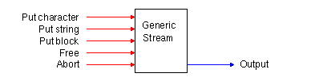
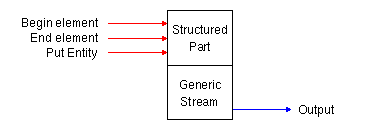
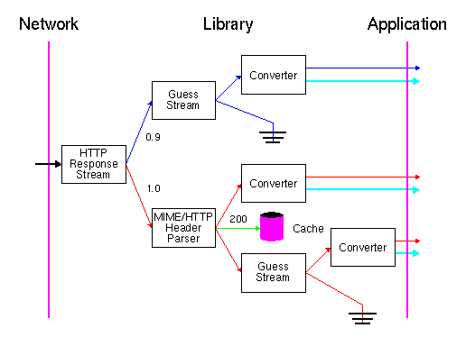

A stream is an object which accepts sequences of characters. It is a destination of data which can be thought of much like an output stream in C++ or an ANSI C-file stream for writing data to a disk or another peripheral device. It can be anything that accepts data, for example another stream, ANSI C-file stream, or even a black hole which absorbs data without ever sending it out again. Streams are used to transport data internally in the Library between the application, the network, and the local file system. Streams can be cascaded into a stream chain by directing the output of a stream which often is called the sink or target into another stream. This means that the processing of data can be done as the total effect of several cascaded streams.
Streams are both used to transport data from the application to the network and vice verse which enables applications to send data objects to the remote server which is a requirement for doing collaborative work using HTTP as the transport carrier. The stream-based architecture allows the Library to be event driven in the sense that data is put down a stream as it gets ready, for example from the network, and any necessary actions then cascade off this event. An event can also be data arriving from the application which would be the case when an application is posting a data object to a remote server.
Many stream modules have their own subclass definitions of either the generic stream class or the structured class which we will describe below. These definitions can be found in the individual stream modules.
The generic stream class is a superclass of all other streams and it provides a uniform interface to all stream objects regardless of what stream sub-class they originate from. The generic stream class is defined with the following set of methods.

A structured stream is a subclass of a stream, but instead of just accepting data, it also accepts the SGML "begin element", "end element", and "put entity". The conversion from a generic stream to a structured stream is done by the SGML tokenizer which recognizes basic SGML mark up like "<", ">", entities etc.

A structured stream therefore represents a structured document. The elements and entities in the stream are referred to by numbers, rather than strings. A DTD contains the mapping between element names and numbers, so each instance of a structured stream is associated with a corresponding DTD. The only DTD which is currently in the Library is an extended version of the HTML DTD level 1, but current work is done to update this to comply with the emerging HTML level 3 specification.
As for generic streams, it is not required that the stream actually has a output - it can for example be a stream writing to a file where no output is required.
Streams are often cascaded into a stream chain but before explaining why a stream chain is a flexible construction for data transportation, let's have a look at what kind of streams the Library provides. The stream modules be divided into groups depending on their behavior:
The first four stream classes often fall into a natural order in a stream chain which is indicated in the the figure below. Here two typical stream pipes are shown for data flowing from the network to the application and vise verse:

As a more specific example, the figure below shows how streams are cascaded when data from a remote HTTP server is handled by the Library. In this case, the stream chain is built as data arrives to the Library from the network: The first stream can decide whether it is a 0.9 or a 1.0 response from the first line in the response; The HTTP header parser stream can decide the format of the body when the header part is parsed and so forth. In other situations the stream chain can be setup before data arrives if the format is known a priori to the data acquisition.

The ground symbol symbolizes that all data goes into a black hole where
nothing is radiated from. The two stream outputs going to the application from
each of the converters symbolizes that error information is separated from
other data objects. This allows the application to direct any body part in an
error message, for example from a "401 Unauthorized" HTTP status,
code to a separate "debug" window where it can be displayed without
affecting the current document view.